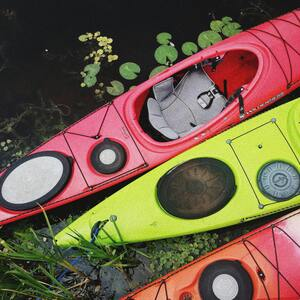
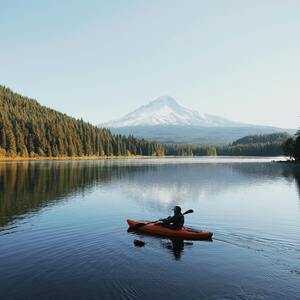

Home Page
About Us
At Aqua Adventures, we are passionate about exploring the great outdoors and connecting people with nature through kayaking. Founded by a team of avid kayakers, we understand the thrill of paddling through serene waters and discovering hidden gems along the way. With years of experience in the industry, we strive to provide unforgettable experiences for adventurers of all skill levels.
Our Services
- Kayak Rentals: Whether you're a solo explorer or planning a group adventure, we offer a wide range of high-quality kayaks for rent. Choose from single or tandem kayaks and embark on your own self-guided journey.
- Guided Kayak Tours: Join one of our expert-led kayak tours and let us take you on an unforgettable exploration of the area's most stunning waterways. From peaceful rivers to breathtaking coastlines, our tours cater to both beginners and experienced paddlers.
- Custom Adventures: Have a specific destination in mind? Looking for a unique team-building experience? Our team can tailor a custom adventure to suit your needs. Contact us to discuss your requirements, and we'll design the perfect kayaking experience for you.
Our Location
Based in the picturesque city of Victoria, BC, Canada, Aqua Adventures is perfectly situated for kayaking enthusiasts. Explore the stunning coastline, tranquil harbours, and vibrant marine life that make Victoria a premier kayaking destination.
Contact Us
Ready to start your kayaking adventure? Have questions about our services? Get in touch with us today!
- Phone: (604) 533 - 2791
- Email: info@aquaadventures.com
- Visit Us: 2997 Victoria Drive, V3K 6U8
Follow us on social media for the latest updates and special offers!
Back to top!